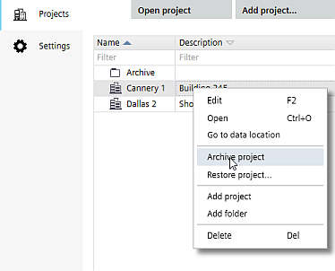

Archiving projects
You can archive a finished project for later reference or for sharing project data. The archived project can be restored in any ABT Site installation.
Archiving is not supported for customer projects created and managed by XWP. Please use the corresponding functions in XWP.Archiving customer projects is not supported if the project data is based on a Pack & Go container.

Archive a project
- In Project Manager > Projects > All projects, right-click a project.
- Select Archive project.